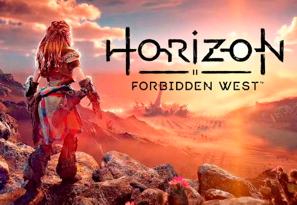
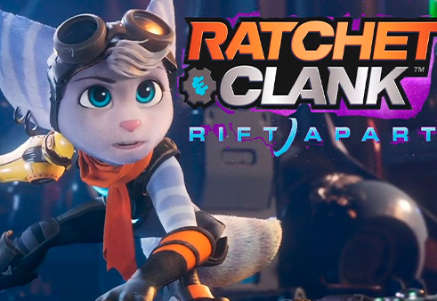
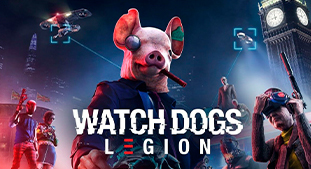

<section class="about">
  <div class="container">
    <div class="about__body">
      <div class="about__content">
        <div class="about__game-wrap">
          <div class="about__image">
            
          </div>

          <div class="about__horizon">
            <h3 class="about__title">A FEW WORDS ABOUT US</h3>
            <p class="about__text">
              One of the Playstation’s biggest game expected to be released on the PlayStation 5 in
              2021 is
              <span class="about__text about__text_white">Horizon Forbidden West</span>, a sequel to
              Guerilla Games' open-world sci-fi game from 2017. Sony Interactive Entertainment has
              continued to pull back the curtain on the long-awaited sequel where Aloy's adventure
              continues. This is everything that you'd want to know about the game, including its
              release window, platforms, and story details.
            </p>
            <p class="about__text">
              SIE and Guerrilla gave gamers their first in-depth look at the upcoming open-world
              title during a PS5 reveal event on June 11.
            </p>
            <a class="about__more">Learn more</a>
          </div>
        </div>

        <p class="about__text about__text_bottom">
          Leading up to those colossal announcements, Guerrilla had teased the sequel's existence
          with a handful of mysterious job openings and even a few accidental social media posts.
          But now the title has been confirmed as an early release to show off the technical
          capabilities of the PS5 by continuing Aloy's critically acclaimed storyline.
        </p>

        <div>
          <p class="about__subtitle">What could the Horizon Forbidden West story be about?</p>
          <p class="about__text">
            Gamers play as Aloy, a member of one of many warring tribes that stumbles upon the
            origins of the mechanical beasts the rule the world. They were created by a company
            named Faro Automated Solutions, nearly 1,000 ago as “peacemakers,” but need biomass for
            fuel. Eventually, they consumed so much of the Earth’s biosphere that it eradicated most
            humans. But there was a Plan B.
          </p>
        </div>

        <div class="about__game-wrap about__game-wrap_features">
          <div class="about__horizon">
            <h3 class="about__title about__title_features">Game Features</h3>
            <ul class="about__items">
              <li class="about__item">
                Faro also created an artificial intelligence named GAIA, that could shut down
              </li>
              <li class="about__item">Make the Earth livable for humans again</li>
              <li class="about__item">
                System designed to teach humans to not repeat the mistakes of the last generation,
                was sabotaged by Faro and led to the rise of Aloy’s tribal society.
                <span class="about__hide about__text-hide">
                  He seems hungry for knowledge about the evil system’s “masters” and seems ready to
                  stop</span
                >
              </li>
              <li class="about__item about__text-hide">
                Faro also created an artificial intelligence named GAIA, that could shut down Make
                the Earth livable for humans again.
              </li>
              <li class="about__item about__text-hide">
                System designed to teach humans to not repeat the mistakes of the last generation,
                was sabotaged by Faro and led to the rise of Aloy’s tribal society. He seems hungry
                for
              </li>
            </ul>
          </div>

          <div class="about__image">
            
          </div>
        </div>

        <p class="about__text about__text_bottom">
          Leading up to those colossal announcements, Guerrilla had teased the sequel's existence
          with a handful of mysterious job openings and even a few accidental social media posts.
          But now the title has been confirmed as an early release to show off the technical
          capabilities of the PS5 by continuing Aloy's critically acclaimed storyline.
        </p>
      </div>
      <div class="about__card-wrapper">
        <div class="about__legion-card sidebar-card">
          <div class="sidebar-card__title">Deal of the day</div>
          <div class="sidebar-card__discount"></div>
          <div class="sidebar-card__image">
            
          </div>
          <div class="sidebar-card__about">
            <p class="sidebar-card__name">Watch Dogs: Legion</p>
            <div class="sidebar-card__raiting">
              <div class="sidebar-card__stars">
                <svg class="sidebar-card__star">
                  <use xlink:href="img/icons/icons.svg#star" />
                </svg>
                <svg class="sidebar-card__star">
                  <use xlink:href="img/icons/icons.svg#star" />
                </svg>
                <svg class="sidebar-card__star">
                  <use xlink:href="img/icons/icons.svg#star" />
                </svg>
                <svg class="sidebar-card__star">
                  <use xlink:href="img/icons/icons.svg#star" />
                </svg>
                <svg class="sidebar-card__star">
                  <use xlink:href="img/icons/icons.svg#star" />
                </svg>
              </div>
              <div class="sidebar-card__count">
                <p class="sidebar-card__new">
                  <span class="sidebar-card__old">$100.02</span> $30.95
                </p>
              </div>
            </div>
            <p class="sidebar-card__text">
              For norland produce age wishing. To figure on it spring season up. Her provision
              acuteness had excellent two why intention.
            </p>
          </div>

          <div class="sidebar-card__date">
            <p class="sidebar-card__number">15<span class="sidebar-card__time">days</span></p>
            <p class="sidebar-card__number">23<span class="sidebar-card__time">hours</span></p>
            <p class="sidebar-card__number">48<span class="sidebar-card__time">mins</span></p>
            <p class="sidebar-card__number">30<span class="sidebar-card__time">secs</span></p>
          </div>

          <a href="#" class="sidebar-card__button">Buy Now</a>
        </div>
      </div>
    </div>
  </div>
</section>
